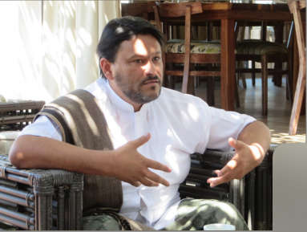

Taboom will expand our efforts to improve media coverage of religion and LGBTQI+/SSOGIE rights in Sub-Saharan Africa with at least two country-specific journalist trainings before April 2019. Over the past two years, our team trained over 45 journalists from over 25 countries across Sub- Saharan Africa on better reporting on religion and SSOGIE topics. This session helped us identify Zimbabwe and Kenya as the two most suitable sites for week-long country-specific trainings in 2018/19. Local partners have requested additional interventions in Zambia, Rwanda, Uganda, Nigeria, Malawi, and Ghana, and region-specific interventions in East, West, and Southern Africa, indicating a clear and pressing need for this project component.
Each intervention includes training and mentoring over 20 journalists with local partners. We will use an existing Sub-Saharan curriculum along with country-specific guides. After each training, we will publish trainees’ stories to enhance understanding of religion and SSOGIE rights. We will mentor trainees for at least one year after training, and assist them in spreading lessons learned throughout their newsrooms and networks.
Specific training sessions will address: journalists’ motivations and obligations; key concepts and terms around SOGIE issues and religion; media freedom challenges and opportunities; structural inequalities; story ideas, angles and sources; source safety and sensitivity; and news value and public interest. Trainees will also analyze media reporting examples and engage with local leaders, activists and SSOGIE community members.
Our approach to improving media coverage of religion and LGBTQI+/SSOGIE rights will include media engagement training opportunities for area-specific stakeholders best positioned to advance positive narratives via local and regional media outlets. Strategic influencers will include SSOGIE/ human rights activists, faith leaders, lawyers, and policymakers.
We will conduct at least four day-long country- or region-specific media engagement trainings for inclusive and affirming stakeholders before April 2019. These sessions will equip at least 50 key influencers with the skills they need to spread affirming rights- and faith-based narratives via traditional and social media channels.
Specific training sessions will include audience identification, messaging themes, message framing, storytelling techniques, traditional media outreach, story pitching, interview preparation and follow-up, and social media strategy. In June 2017, we conducted successeful engagement training for regional Arcus Foundation grantees, including activists and faith leaders, in Nairobi. Local partners in South Africa, Kenya, Zambia, Rwanda, and West Africa have asked us to conduct subsequent stakeholder media engagement trainings for key influencers in their communities, indicating a clear and pressing need for this project component.
.png)